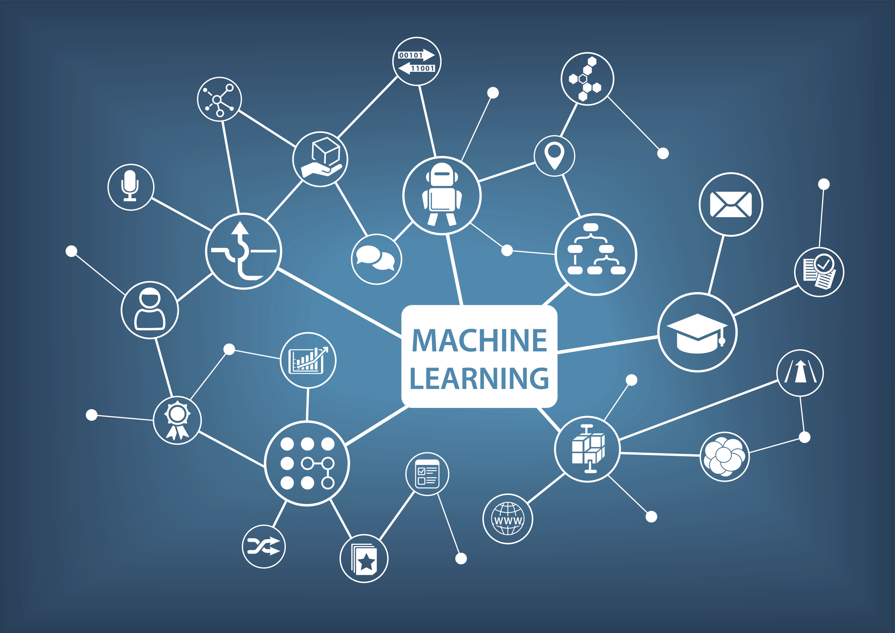
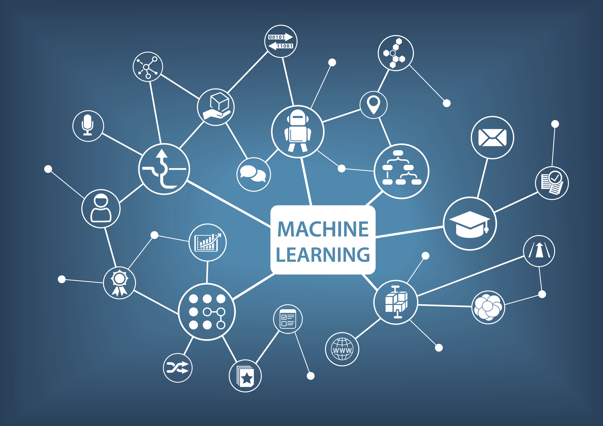

Cloud Services
Our Cloud Services course is a comprehensive, hands-on training program designed to equip learners with the essential skills and knowledge required to excel in the rapidly growing field of cloud computing. The course begins with an introduction to cloud fundamentals, including the history of cloud technology, deployment models, and service models such as IaaS, PaaS, and SaaS. Students will gain practical experience in configuring cloud environments, provisioning virtual machines, and managing storage solutions using leading platforms like AWS, Microsoft Azure, and Google Cloud. Throughout the program, learners engage in real-world projects that simulate enterprise-level cloud architectures, teaching them how to deploy scalable and secure applications while maintaining cost-efficiency. Additionally, the curriculum covers advanced topics such as cloud security, identity and access management, network configuration, disaster recovery, and monitoring using cloud-native tools. The course also emphasizes DevOps practices, continuous integration, and continuous deployment pipelines, allowing participants to understand the end-to-end lifecycle of cloud-based applications. By the end of the program, students will have mastered how to architect cloud solutions that are resilient, high-performing, and aligned with business objectives. This course is ideal for IT professionals, developers, system administrators, and anyone looking to expand their technical skill set in cloud technologies.

UI/UX Development
Our UI/UX Development course is a comprehensive, hands-on training program designed to equip learners with the essential skills and knowledge required to excel in the dynamic and rapidly evolving field of user interface and user experience design. The course begins with an introduction to the fundamentals of UI/UX, including the principles of design thinking, usability, accessibility, and user-centered design. Students will gain a solid understanding of how visual design, interaction design, and information architecture come together to create seamless and intuitive digital experiences. Throughout the program, learners engage in practical exercises that teach them how to craft wireframes, mockups, and interactive prototypes using industry-standard tools such as Figma, Adobe XD, Sketch, and InVision. The curriculum emphasizes hands-on projects where participants design websites, mobile applications, and software interfaces, applying best practices to optimize navigation, layout, typography, and color theory. By working on real-world case studies, students develop the ability to translate user requirements into compelling digital experiences that are both functional and aesthetically appealing. In addition to design skills, the course covers essential aspects of user research and usability testing. Participants learn how to conduct interviews, surveys, and A/B testing to gather actionable insights, allowing them to iterate designs based on user feedback. The program also delves into analytics, helping learners.
Digital Marketing
Our Digital Marketing course is a comprehensive, hands-on training program designed to equip learners with the essential skills and knowledge required to thrive in today’s fast-paced digital landscape. The course begins with an introduction to the fundamentals of digital marketing, including key concepts such as inbound and outbound marketing, consumer behavior, branding, and the digital marketing funnel. Students will gain a solid understanding of how businesses leverage online channels to reach and engage audiences, drive traffic, and generate conversions. Throughout the program, learners engage in practical exercises that cover essential areas such as search engine optimization (SEO), search engine marketing (SEM), social media marketing, email marketing, and content strategy. Participants will learn how to develop and execute campaigns on platforms like Google Ads, Facebook, Instagram, LinkedIn, and YouTube. By working on real-world projects, students understand how to create compelling ad creatives, optimize landing pages, and analyze campaign performance to maximize ROI. In addition to core digital marketing strategies, the curriculum emphasizes analytics and data-driven decision-making. Learners gain hands-on experience using tools such as Google Analytics, SEMrush, and HubSpot to track user engagement, measure key performance indicators (KPIs), and refine marketing strategies.


Web Development
Our Web Development course is a comprehensive, hands-on training program designed to equip learners with the essential skills and knowledge required to excel in the dynamic field of web development. The course begins with an introduction to web fundamentals, including HTML, CSS, and JavaScript, providing students with a strong foundation to build interactive and responsive websites. Participants will learn how web browsers work, how to structure web pages, and how to style and enhance them for optimal user experience. Throughout the program, learners engage in practical exercises that cover both front-end and back-end development. Students gain experience using modern frameworks and libraries such as React, Angular, and Vue.js for front-end development, and Node.js, Express, and Django for server-side programming. They will learn how to create dynamic websites, integrate APIs, and work with databases like MySQL, MongoDB, and PostgreSQL to store and manage data efficiently. Real-world projects allow learners to build fully functional web applications, enhancing their problem-solving and coding skills. In addition to technical skills, the curriculum emphasizes best practices in software development, including version control using Git, debugging, testing, and performance optimization. Students also explore responsive design, accessibility, and SEO techniques to ensure websites perform well across devices and reach the intended audience.
Software Service
Our Software Services course is a comprehensive, hands-on training program designed to equip learners with the essential skills and knowledge required to excel in the modern software development and IT services industry. The course begins with an introduction to software fundamentals, including software development life cycle (SDLC), service models, and methodologies such as Agile, Scrum, and DevOps. Students will gain a deep understanding of how software services are designed, developed, deployed, and maintained to meet business and user requirements. Throughout the program, learners engage in practical exercises covering software design, development, testing, and deployment. Participants work with programming languages such as Java, Python, C#, and JavaScript, as well as frameworks and platforms like .NET, Spring, and Node.js. They will learn how to create scalable, secure, and maintainable applications while integrating essential software services like databases, APIs, and cloud solutions. Real-world projects simulate enterprise-level software environments, allowing students to experience the end-to-end process of delivering professional software solutions. In addition to core development skills, the curriculum emphasizes quality assurance, testing strategies, and continuous integration/continuous deployment (CI/CD) practices. Students learn to implement unit tests, integration tests, and automated deployment pipelines to ensure software reliability and efficiency.
 

Machine Learning
Our Machine Learning course is a comprehensive, hands-on training program designed to equip learners with the essential skills and knowledge required to excel in the rapidly evolving field of artificial intelligence and data-driven technologies. The course begins with an introduction to the fundamentals of machine learning, including the history of AI, types of machine learning (supervised, unsupervised, and reinforcement learning), and key concepts such as regression, classification, clustering, and neural networks. Students will gain a solid understanding of how algorithms learn from data and how these methods are applied in real-world scenarios. Throughout the program, learners engage in practical exercises using industry-standard tools and libraries such as Python, NumPy, Pandas, Scikit-learn, TensorFlow, and PyTorch. Participants will learn how to preprocess data, build predictive models, and evaluate model performance using metrics such as accuracy, precision, recall, and F1-score. Real-world projects allow students to implement machine learning solutions for applications including recommendation systems, predictive analytics, image recognition, and natural language processing. The curriculum also emphasizes advanced topics such as deep learning, neural network architectures, reinforcement learning, and AI model optimization. Learners gain hands-on experience in feature engineering, hyperparameter tuning, and deploying models in production environments.